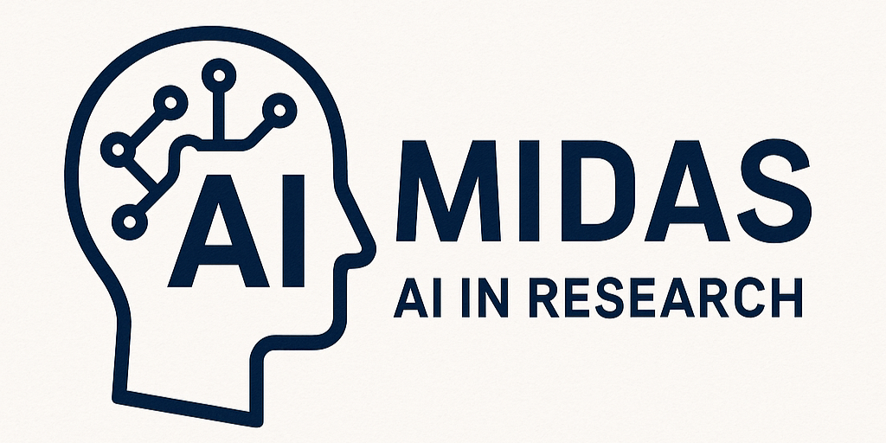

MIDAS Tutorial: Applying AI in Research
Welcome to the MIDAS AI in Research Tutorial.
This handbook began with a simple curiosity — how do our questions as researchers evolve in the era of artificial intelligence? Each advance in AI reshapes not only how we analyze data or write code, but what we ask, why we ask it, and how we validate answers.
Our Mission
Through this living tutorial, I aim to gather and organize the essential questions and answers that researchers across disciplines face when integrating AI into their work — from literature review and grant writing, to ethical practice, reproducibility, and responsible deployment.
A Collaborative Resource
Rather than a static guide, this is an evolving space to collect insights, examples, and reflections about using AI as a true collaborator in research. Whether you are new to AI tools or looking to deepen your methodological understanding, I invite you to explore, question, and contribute to this shared resource.